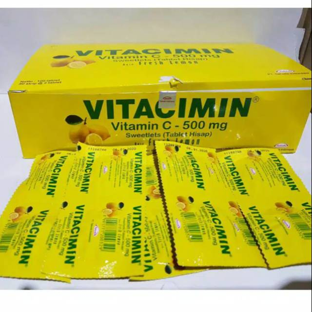
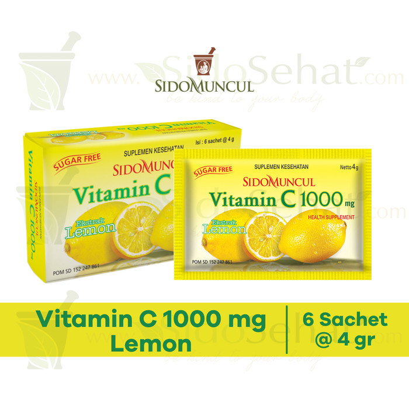
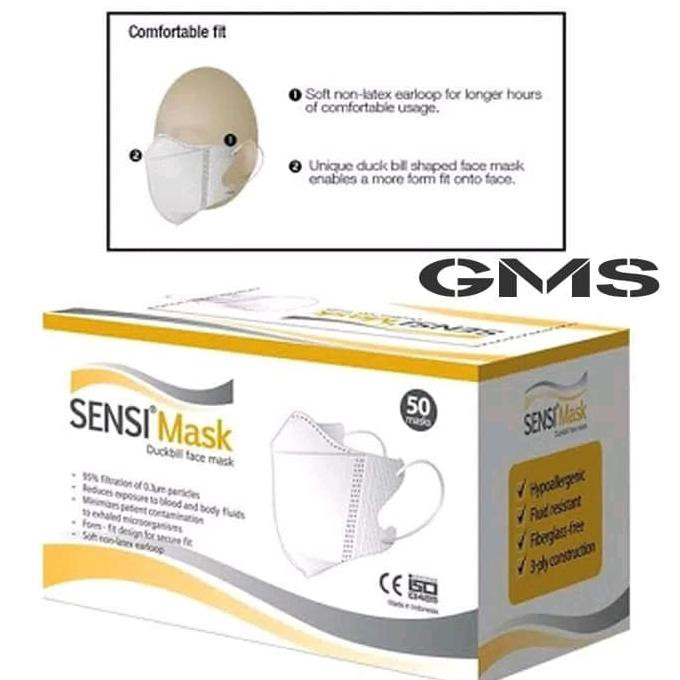

IMBOST
DESKRIPSI
IMBOOST FORCE TABLET merupakan produk suplemen kesehatan untuk meningkatkan daya tahan tubuh. Produk suplemen ini mengandung Echinacea purpurea herb dry extract, Black elderberry fruit dry extract, Zn Picolinate dalam bentuk kaplet salut selaput. Suplemen ini bukan multivitamin melainkan Immunity Booster (peningkat daya tahan tubuh - immunomodulator) yang berfungsi untuk menjaga kesehatan tubuh agar tidak mudah jatuh sakit dan mempercepat penyembuhan penyakit.
Beli

FACE SHIELD
DESKRIPSI
Face shield adalah sebuah alat pelindung diri yang ditujukan untuk melindungi seluruh bagian wajah pemakainya dari berbagai marabahaya seperti objek melayang dan pecahan jalan raya, cipratan kimia atau material-material yang berpotensi menginfeksi seperti virus.
Bentuk face shield berupa penutup wajah seperti perisai yang terbuat dari plastik transparan. Alat ini sebenarnya sudah lama digunakan oleh tenaga medis, seperti untuk operasi atau pada saat tes swab. Face shield dapat mengurangi penularan infeksi penyakit termasuk virus corona yang menyebabkan Covid-19.
Beli

MASKER KN95
DESKRIPSI
Masker KN95 adalah pelindung wajah dengan penyaring partikel yang sesuai dengan standar N95 dari National Institute for Occupational Safety and Health (NIOSH) air filtration rating Amerika Serikat. Masker N95 artinya mampu memfilter setidaknya 95 persen partikel yang melayang di udara, tetapi tidak tahan terhadap minyak seperti P95. Masker N95 adalah pelindung wajah dengan penyaringan partikel yang paling umum dijumpai.asker N95 melindungi pernapasan dari partikel tapi tidak dari gas dan uap.
Masker KN95 dianggap secara fungsi setara dengan Masker FFP2 dari Uni Eropa dan Masker N95 dari Tiongkok. Walaupun begitu terdapat sedikit perbedaan kriteria dalam sertifikasi kemampuannya (efisiensi penyaringan, agen penguji, tingkat aliran udara dan perbedaan tekanan udara)
Masker KN95 memerlukan jaring halus serat polymer sintetis yang biasa disebut kain nonwoven polypropylene, yang diproduksi dengan proses melt blowing yang membentuk filter bagian dalam yang menyaring partikel berbahaya.
Beli

VITACIMIN
DESKRIPSI
VITACIMIN merupakan suplemen kesehatan dengan kandungan Ascorbic acid atau Vitamin C dalam bentuk tablet hisap. Suplemen ini digunakan untuk membantu memenuhi kebutuhan vitamin c harian, serta membantu menjaga daya tahan tubuh.
Beli

SIDOMUNCUL VITAMIN C
DESKRIPSI
Sido Muncul C-1000 merupakan suplemen kesehatan yang mengandung vitamin C, bermanfaat untuk membantu memelihara daya tahan tubuh. Varian Rasa: SIDO MUNCUL C 1000 (Dengan Ekstrak Lemon) SIDO MUNCUL C 1000 (Sweet Orange)
Beli

MASKER SENSI
DESKRIPSI
Masker Sensi Earloop 3 ply adalah masker satu kali pakai yang dapat digunakan untuk melindungi saluran pernapasan dari debu, asap, kuman, cairan dan partikel-partikel lain yang terdapat di udara. Melindungi dari debu dan kuman dan mencegah virus dari penyakit udara yang tidak baik.
Beli